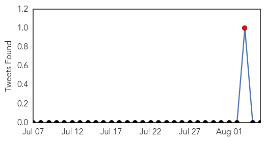
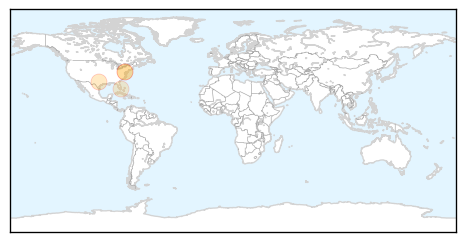
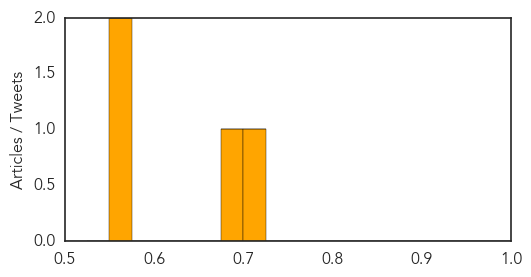

Hepatitis
30-Day Web Trend
30-Day Twitter Trend
1 alerts, 0 warnings

Article Locations
Article Confidences
Top Articles:
Top Tweets:
-
No tweets found for Aug 05, 2014
Ebola
30-Day Web Trend
13 alerts, 6 warnings

30-Day Twitter Trend
5 alerts, 0 warnings

Article Locations
Article Confidences

Top Articles:
- 1.000
- The West African Ebola outbreak has the world on alert. Here is a rundown of suspected cases.
- 1.000
- Fear, treatment and a serum: The U.S. and the Ebola outbreak
- 1.000
- More Education Needed to Contain Ebola
- 1.000
- Ebola Infected American Missionary Flown Out of Liberia
- 1.000
- Foreign Relations Council says Ebola outbreak is ‘out of control’
- 1.000
- Saudi man being tested for Ebola virus after returning from Sierra Leone
- 1.000
- Why There’s No Money in An Ebola Vaccine
- 1.000
- Ebola: Welsh national who returned from West Africa a week ago 'in quarantine' at home
- 1.000
- Q&A: Ebola and flying - africa - world
- 1.000
- BA suspends flights over Ebola outbreak
- 1.000
- Ebola outbreak: Sierra Leone, Liberia deploy troops as death toll reaches 887
- 1.000
- Nigeria admits slow response to Ebola case
- 1.000
- Ebola Infected American Missionary Flown Out of Liberia
- 1.000
- Eight in contact with Ebola traveller now with symptoms
- 1.000
- Experts: More Education Needed to Contain Ebola
- 1.000
- 10 Things You Need To Know To Tell What’s True And What’s False
- 1.000
- KSLA News 12 Shreveport, Louisiana News Weather & Sports
- 1.000
- Ebola Infected American Missionary Flown Out of Liberia
- 1.000
- What we need to contain ebola
- 1.000
- Ebola virus: Person in Wales being monitored following possible exposure to disease
- 1.000
- Homeland Security News Wire
- 1.000
- Gulf Daily News Local News Ebola watch
- 1.000
- Ebola Death Toll Almost 900
- 1.000
- How the Ebola outbreak became deadliest in history
- 1.000
- 5 things to know about the Ebola virus
- 1.000
- Nigeria acknowledges slow response in Ebola case
- 1.000
- Has Ebola spread to Saudi Arabia?
- 1.000
- Has Ebola spread to Saudi Arabia?
- 1.000
- Has Ebola spread to Saudi Arabia?
- 1.000
- Has Ebola reached the UK? Welsh national who returned from West Africa is 'in quarantine'
- 1.000
- Suspected Ebola virus case in Saudi Arabia
- 1.000
- Connecticut Hospitals Have Protocols In Place For Patients Displaying Ebola-Like Symptoms
- 1.000
- The most from the coast
- 1.000
- World Bank sets emergency fund to curb Ebola
- 1.000
- Ebola crisis: World Bank announces $200m emergency fund
- 1.000
- Ebola cited in suspension of 7,200 Haj visas for Africa
- 1.000
- Saudi man being tested for possible Ebola case: MoH
- 1.000
- Ebola outbreak: World Health Organisation urged to allow experimental drugs to treat disease
- 1.000
- Ebola is here: 5 reasons not to panic
- 1.000
- #Ebola Virus: Timeline of an unrelenting epidemic
- 1.000
- American woman infected with Ebola heads back to U.S.
- 1.000
- Close Call: New York Patient “Unlikely” To Have Ebola Virus (DETAILS)
- 1.000
- American woman infected with Ebola arrives in U.S.
- 1.000
- American woman infected with Ebola arrives in U.S.
- 1.000
- Ebola virus disease claims 887 lives in West Africa
- 1.000
- No plans to suspend West Africa flights
- 1.000
- 8 suspected Ebola cases in Nigeria
- 1.000
- Ebola Fast Facts
- 1.000
- Mount Sinai patient who traveled to West Africa tested for Ebola virus
- 1.000
- Health official says Mount Sinai patient who traveled to West Africa likely doesn't have Ebola
Showing top 50 articles...
Top Tweets:
- 0.984
- .@AmeshAA: Case-finding contract tracing isolation and public health messaging are the steps needed to control the ebola outbreak.
- 0.976
- RT: They can't even distinguish btw Ebola virus malaria nd fever.
- 0.974
- RT: L'OMS xifra en 887 els morts per ebola a Àfrica. @ToniTrilla a 8dies: "El brot és molt cridaner però de malària moren …
- 0.911
- RT: @bbcmundo porqué el 1er mundo necesita que disminuya por lo menos en 2/3 la población africana gracias a la TBC Ebola mal…
- 0.899
- RT: Malaria? No?—>RT: British Airways has suspended flights to Liberia and Sierra Leone because of the Ebola outbreak. Br…
- 0.881
- RT: I have so many mosquito bites. The last thing one needs now with the Ebola outbreak is malaria symptoms.
- 0.873
- RT: Since Ebola first appeared in 1976 about 2000 people in total have died from the disease. Measles kills 2300 a WEEK Malar…
- 0.861
- RT: Ebola is dangerous - but malaria will not disappear since the virus stays in third world countries lasttweet
- 0.854
- RT: even malaria we'v nt had a vaccine and we talkin abt ebola
- 0.833
- RT: Unlike flu Ebola is not transmitted by air. If prevention measures are implementedrisk of infection still very low http://t…
- 0.833
- RT: Unlike flu Ebola is not transmitted by air. If prevention measures are implementedrisk of infection still very low http://t…
- 0.829
- RT: Since Ebola outbreak 300000 have died from malaria tuberculosis has claimed 600000 lives. Ebola mig http://t.co/EhJaW…
- 0.813
- RT: "Since the Ebola outbreak began in Feb around 300000 people have died from malaria while tuberculosis has claimed ove…
- 0.808
- RT: Advantage of dealing with Ebola – only contagious when you have symptoms unlike flu - UPMC physician tells…
- 0.778
- RT: Since the Ebola outbreak in March this year 300.000 people died (+1700 a day) from malaria - so get real people. http://…
- 0.764
- RT: @faineg hoping Ebola won't become pandemic a w/o forgetting TB Malaria and other preventable diseases
- 0.745
- RT: Hundreds of Africans die from an Ebola outbreak we say there's no cure. Two Americans catch the virus now there's 'secre…
- 0.741
- RT: CDC has issued a travel alert for travel to Nigeria because of Ebola cases. See our notice for more information: http://t.…
- 0.738
- RT: Updated case counts now available for the Ebola outbreak in West Africa. http://t.co/8pGBa98FBW
- 0.715
- RT: Concerned about Ebola? You’re worrying about the wrong disease. More people have died of malaria since outbreak began http…
- 0.706
- .@AmeshAA: The 2 infected Americans received monoclonal antibodies. Targets ebola virus specifically first time it's been used in humans.
- 0.646
- RT: "@hajrah_bah: "@Reeddmann: Hehehe am telin you "@hajrah_bah: Ebola virus just made HIV sounds like malaria""yeah"everywhere …
- 0.628
- RT: Since the Ebola outbreak began 300000 people have died from malaria while TB has claimed over 600000. http://t.co/gJaxax…
- 0.625
- RT: Ebola False Alarm at Johns Hopkins: Johns Hopkins thought it had an Ebola case but it turned out to be malaria.
- 0.601
- RT: Ebola False Alarm at Johns Hopkins: Johns Hopkins thought it had an Ebola case but it turned out to be malaria. http:…
- 0.601
- RT: Ebola False Alarm at Johns Hopkins: Johns Hopkins thought it had an Ebola case but it turned out to be malaria. http://t…
- 0.594
- RT: "Since the Ebola outbreak began in February around 300000 people have died from malaria" good read by http://t.co…
- 0.575
- RT: Ebola"@Iam__teslim: LOlFuu"@_OKbye_: Malaria"@Miz_hodeey: "Iam__teslim: Your Zodiac sign? _Anny_PeaceAroundTheWorld"canc…
- 0.566
- RT: Like said. Ebola has killed 4000 people total. Malaria killed 1.2 million in 2010 alone.
- 0.544
- RT: Malaria has killed more Nigerians than Ebola in the last one month. The Ebola noise is louder than the Malaria noise. How does …
- 0.528
- RT: health Ebola False Alarm at Johns Hopkins: Possible Ebola Case Turned Out to Be Malaria at Johns Hopkins http://t.co/W…
- 0.514
- now health care workers are going door to door in W Africa -- to try and stop the ebola epidemic. http://t.co/g9hSLohdA0